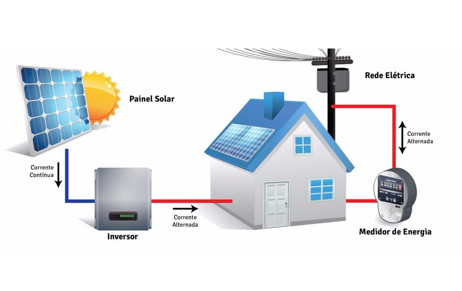
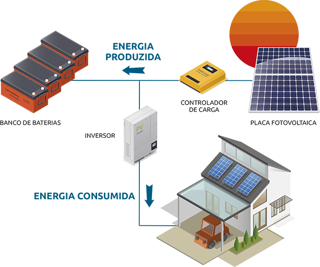

O sistema fotovoltaico conectado à rede (on-grid) funciona a partir da captação da luz solar por meio dos painéis solares, gerando eletricidade em corrente contínua (CC), que passa pelo inversor solar e é convertida em corrente alternada (CA) e é distribuída para o imóvel.
A grande diferença do sistema on-grid para o off-grid é o que acontece com a energia gerada em excesso: enquanto o sistema off-grid armazena a energia em baterias solares, o sistema on-grid transfere para a rede elétrica, gerando créditos de energia para serem usados posteriormente.

O sistema de energia solar off-grid (sistema isolado ou sistema autônomo) tem como principal característica o “autossustento”, ou seja, é um sistema não conectado à rede elétrica, que armazena a energia solar excedente em baterias para ser utilizada quando não houver produção.
Por tratar-se de um sistema autônomo, o funcionamento ocorre à parte da rede elétrica. O sistema abastece os aparelhos domésticos e eletrônicos que utilizarão a energia de forma direta. Essa opção é principalmente utilizada em locais remotos, visto que, para muitos, é a maneira mais econômica e simples de gerar energia elétrica por conta de dificuldades na região.
O sistema off grid tem seu funcionamento igual ao sistema on grid, sendo aproveitado em atividades do dia a dia como bombeamento de água, iluminação, eletrificação de cercas e muito mais. A energia solar, por ser armazenada em baterias, pode ser utilizada em dias chuvosos, nublados e durante a noite.
A operação de um sistema solar off grid ocorre com o mesmo padrão de captação da luz do sol para a conversão de energia solar em energia elétrica, utilizando equipamentos como painéis solares, inversor solar, controlador de carga e baterias.
